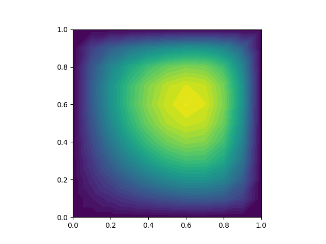

Fenics kurulumu icin [2].
[1, sf. 267]'deki örneği altta görüyoruz,
import fenics as fe
mesh = fe.RectangleMesh(fe.Point(0, 0), fe.Point(1, 1), 10, 10)
V = fe.FunctionSpace(mesh, 'Lagrange', 1)
u = fe.TrialFunction(V)
v = fe.TestFunction(V)
a = fe.inner(fe.nabla_grad(u), fe.nabla_grad(v)) * fe.dx
f1 = fe.Constant(1.0)
L1 = f1 * v * fe.dx
f2 = fe.Expression("x[0]*x[0] + x[1]*x[1]", degree=2)
L2 = f2 * v * fe.dx
u0 = fe.Constant(0)
def u0_boundary(x, on_boundary):
return on_boundary
bc = fe.DirichletBC(V, u0, u0_boundary)
A = fe.assemble(a)
b = fe.assemble(L1)
bc.apply(A, b)
u_sol1 = fe.Function(V)
fe.solve(A, u_sol1.vector(), b)
fe.plot(u_sol1)
plt.savefig('fenics-sol1.png')
u_sol2 = fe.Function(V)
fe.solve(a == L2, u_sol2, bc)
fe.plot(u_sol2)
plt.savefig('fenics-sol2.png')

[devam edecek]
Kaynaklar
[1] Johansson, Numerical Python
[2] Bayramli, Fenics, https://burakbayramli.github.io/dersblog/sk/2021/07/fenics-sonlu-ogeler-finite-elements.html